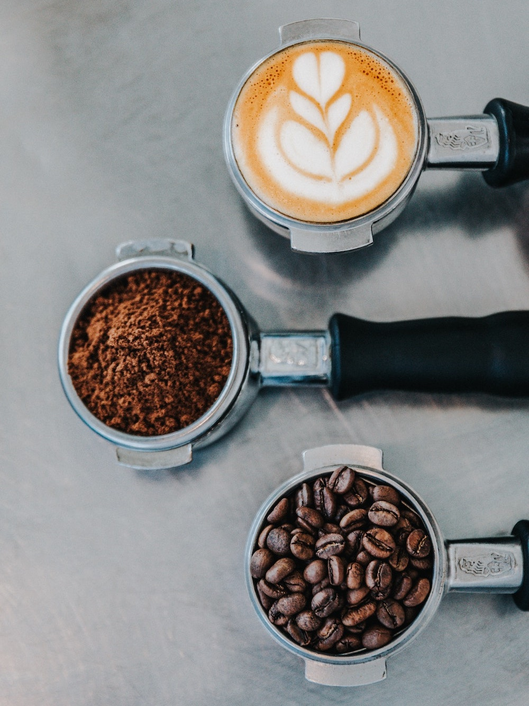

About Us
Welcome to Aggies Coffee House, where each cup of coffee is a celebration of flavor and a tribute to the rich coffee culture. Founded by a group of NC A&T students, our coffee house has quickly become a cornerstone of the students community here at NC A&T, offering a warm, inviting atmosphere that sparks creativity and conversation.
- Specialty Coffee
- Gourmet Desserts
- Music and Poetry Readings
- Open Mic Night
Our Commitment to Sustainability
At Aggies Coffee House, we believe that great coffee should not come at the expense of our planet. Our commitment to sustainability is woven into every aspect of our operations, from responsibly sourced beans to eco-friendly practices in our shop. We strive to make a positive impact on the environment while delivering exceptional products and services to our customers.
Community Involvement and Events

At Aggies Coffee House, we believe in the power of community. We are more than just a place to get great coffee; we are a hub for community activities and a supporter of local causes. Our commitment to community involvement is fundamental to our identity, and we are proud to host a variety of events that bring people together and celebrate local talent.
- The "Aggies Artisan Fair" – a showcase for local crafts and artworks.
- "Coffee with a Cause" – where a portion of every coffee sold supports a local charity.
- Monthly "Poetry and Pastry Night" – a cozy evening of poetry readings accompanied by our delicious homemade pastries.
Location
402 Laurel Street,Greensboro, NC 27405.
See Google Maps for directions.
Contact Us
You can contact us by:
Email: aggiescoffee@aggies.ncat.edu
Phone: (336)123-4567